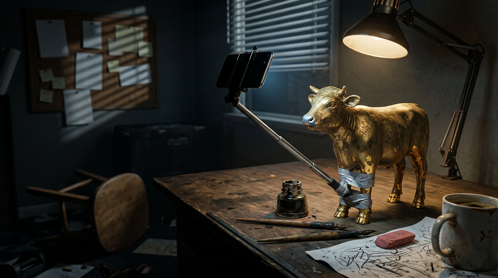

Why Politicians Now Post AI Memes of Themselves
Part of The Language of Power · Chapter 5 of 5 →The President Painted Himself as Jesus, the Vice President Lectured the Pope, and Somewhere Moses Is Shopping for a Bigger Rock
Picture a man in a white robe.
Light pours off him like he swallowed a lighthouse. He’s laying hands on the sick, the whole tableau drenched in that honeyed glow you only ever see on funeral insurance brochures and paintings of cottages sold at mall kiosks.
Now give the man in the robe the face of the forty-seventh President of the United States.
That image went up on Truth Social in mid-April 2026, posted by the President himself, shortly after a long screed calling Pope Leo XIV “WEAK on Crime, and terrible for Foreign Policy.” The outcry was fast and it was bipartisan in the way only blasphemy can manage. He deleted it. Then he explained it.
It was him, he said, “as a doctor.”
A doctor. In a robe. Glowing. Healing by touch. If that’s what doctors look like in Mar-a-Lago, I want his insurance plan… and his lighting guy.
And then, because the man has never once in his life left a hole without digging it deeper, he posted a second AI image, this one of Jesus hugging him, captioned with a joke about God playing his Trump card.
You, yes you, already halfway down the page to tell me I have a derangement syndrome: sit. Here’s a stick. Go play with it. There’s a whole section further down with your name on it, and I promise it’s fair. Fairer than you’d be.
First, Let Me Set the Table, Because the Table Has a Pope on It
The fight was about the war with Iran. Pope Leo, the first American pontiff, the kid from Chicago, called it unjust and said threats of total destruction were “truly unacceptable.” Trump answered on Truth Social with the WEAK on crime post, took credit for Leo getting elected in the first place, and let it be known he preferred the Pope’s brother.
He preferred the Pope’s brother. That’s a sentence. Somebody typed that into history and history just has to hold it now, like a hot casserole dish with no oven mitt.
Then on April 14, at a Turning Point USA event at the University of Georgia, Vice President JD Vance stepped up to the plate. Vance converted to Catholicism in 2019. Leo is an Augustinian friar who ran the entire order for twelve years and holds a doctorate in canon law. And Vance told the crowd the Pope should “be careful when he talks about matters of theology.”
His argument was just war theory. The Pope had said disciples of Christ are never on the side of those who drop bombs, and Vance countered with more than a thousand years of just war tradition.
Which was first worked out by Saint Augustine.
As in, the Augustine. The one the Pope’s religious order is named after.
That’s explaining the Force to Yoda. At a frat party. In Athens, Georgia. With a Solo cup.
Even the Senate Majority Leader, John Thune, a Republican, a man whose entire career is built on not saying anything, was asked about it and said: “Isn’t that his job?”
Now. I am not a theologian. I’m not freaking Thomas Aquinas. I couldn’t tell you the difference between a papal bull and a regular bull without a rodeo clown standing by. But I know who’s the Pope, and I know that the Pope is the one guy on Earth whose job description literally reads “matters of theology,” and I know that if your rebuttal to the Pope on Catholicism is the Pope’s own order’s founder, you have brought a spoon to a sword fight and the spoon belongs to him.
Moses Did Not Take This Kind of Thing Well
Let’s go to the source material.
Exodus 32. Moses goes up Mount Sinai for forty days to collect the rules. Down below, the people get bored, the way people do. They hand Aaron their gold earrings and he casts them a calf. A golden calf. An image to worship. Somebody’s idea of a vibe.
Moses comes down the mountain carrying two stone tablets inscribed by the finger of God, sees the calf, sees the dancing, and smashes the tablets. The first draft of the Ten Commandments, gone, because of a farm animal.
And then he goes further. He doesn’t just knock the calf over. He burns it, grinds it to powder, scatters the dust on the water, and makes the whole crowd DRINK it.
That’s not a punishment, that’s a smoothie with a message. The original detox cleanse. Gold-flake kombucha, served by an angry prophet, roughly three thousand years before anybody invented brunch.
The Second Commandment, the one right after “no other gods before me,” is the one about not making yourself graven images. The rule exists because the Big Guy knew. He KNEW. Give a primate some shiny material and a few idle hours and the primate will make a statue of something to worship, and if he’s ambitious enough, the statue will look like him.
Three thousand years later the primate doesn’t need the earrings. He needs thirty seconds and a prompt.
STOP.
Pull over. Hazards on. Coffee in the lap.
You thought this was a Trump post. So did I, for about seven paragraphs. Talk about doing a tango with the narrative… you thought I was turning left and instead I’m standing in the middle of the intersection doing the Macarena while a bus honks.
This isn’t about one man. That’s the easy post. The easy post writes itself and gets read exclusively by people who already agree with it, which is the internet’s version of preaching to the choir while the choir eats Doritos.
Here’s the actual thing that’s been rattling around my brain pan like a marble in a hubcap: when did we decide it was fine for the people on the pedestal to make the cartoons? Not the satirists. Not the newspapers. Not the guy at the bar with a Sharpie. Them. The leaders. Directly. From the official account. And when did we go from tolerating it to applauding it?
Because I live in Buenos Aires, and down here we don’t get one AI Jesus. We get a studio.
Meanwhile, at the Other End of the Hemisphere, the President Has a Content Calendar
Javier Milei, President of Argentina, posts AI videos the way some men collect lawn gnomes: compulsively, in quantity, and with zero awareness of what the neighbors think.
A sampling, all posted or shared by the President of a G20 country:
The zombie documentary. A mock nature film about a virus called “KU K-12” that turns Kirchnerist politicians and celebrities into zombies who’ve lost the ability to think, ending with a lion walking through the ruins.
The animal biography. A full Zootopia-style animated biography in April 2026, his rise to power, with his opponents rendered as animals and Peronists as monkeys.
The cockroach goal. A World Cup-flavored clip in October where he dribbles past floating labels reading “poverty” and “inflation” and runs over “kukas,” the slur for Kirchnerists, drawn as cockroaches.
The plumber. A Super Mario run starring himself and his sister Karina, the Secretary General of the Presidency.
The brick. A Lego version of himself for Labor Day. Labor Day.
And Star Wars. Lots of Star Wars.
In August 2025 he posted an AI video casting himself as a Jedi leading a galactic resistance against the “Statist Empire,” signing off with may the forces of the free market be with you. Then, at his rally at the Movistar Arena that October, the screens played a doctored scene from The Last Jedi: Milei as Luke Skywalker, Cristina Kirchner as Kylo Ren, spaceships wearing the logos of the opposition newspapers.
Pause on that.
Of all the Luke Skywalker moments in all the galaxy far, far away, the man picked The Last Jedi. In The Last Jedi, Luke’s big heroic standoff with Kylo Ren is not Luke. It’s a Force projection. A hologram. Luke’s actual body is a planet away, sitting cross-legged on a rock, and the effort of beaming in kills him a few minutes later.
The President of Argentina cast himself as a hero who wins by not actually being there, and then dies.
That’s either the worst-chosen political ad ever made or the most honest one, and I genuinely can’t tell which, and I’ve watched it four times.
I was having a beer with a friend the first time, and right over our shoulder, high up in a corner, La Nación was editorializing it. Telling us, like every “unbiased” news report in this country, what we were actually seeing. To which my friend goes: “Do these assholes really need to explain what we’re seeing? It’s there. We are seeing it. We don’t need some cheap-ass fucker going on about how it’s not one of the dumbest and most insane things we’ve seen a President do. And Lyndon Johnson once talked about his balls. That pales in comparison… Plus,” and he’s a film freak, “the little goblin picked the wrong fucking movie.”
The Wrong Movie Club
I had it in my head that the Revenge of the Sith pick was Milei’s. It wasn’t his. My brain had filed it under the wrong president… and the right president turns out to be even better.
On May 4, 2020, Star Wars Day, the Trump re-election campaign tweeted a video built from Revenge of the Sith. Biden as Palpatine giving the order. Two clone troopers labeled CNN and MSNBC sneaking up on Yoda. Yoda wearing Trump’s grinning face, spinning around, lopping their heads off.
The scene is Order 66.
Order 66 is the scene where the Jedi get massacred. Revenge of the Sith is the movie where the good guys LOSE. All of them. The temple burns. Yoda goes into exile on a swamp planet and spends twenty years eating soup alone. If you are going to cast yourself as the vanquisher of all evil, do not pick the one where the vanquishers get vanquished.
And it’s a pattern. They can’t stop doing it.
December 2019: the campaign put Trump’s face on Thanos in the Avengers: Endgame scene right before Thanos gets snapped out of existence.
Spring 2020: the campaign manager publicly nicknamed the operation the Death Star. Which, as half of Twitter pointed out within the hour, gets blown up. Twice. By farm boys.
May 4, 2025: the official White House account posted the President as a muscular Jedi holding a red lightsaber. Red is the Sith color. That is the single most famous color code in the history of cinema, and the White House got it backwards.
I’m starting to think there’s a cabal. Some ancient Lucasfilm curse, a contract signed in a basement at Skywalker Ranch in 1977, blood on the vellum, that guarantees every politician who borrows the Force gets cast as the guy who’s about to lose. It’s the only explanation that respects everyone’s intelligence.
When Did the Pedestal Become a Stage?
Political cartoons are not new. The two most famous animals in American politics came from one guy with a pen.
Sit with that last line, because it’s the whole story in miniature. The insult became the logo. The parties took the cartoon somebody drew to humiliate them and wore it like a varsity jacket.
But for most of that history there was a rule nobody had to write down: the cartoon was done TO them. By somebody else. A cartoonist with a name, at a paper with an editor, who could be sued, fired or punched at a fundraiser. The politician’s job was to stand on the pedestal and take it, red-faced, like a statue getting pooped on by pigeons with opinions.
Then, one night in 1968, the statue climbed down.
On September 16, Richard Nixon, running for president, appeared on Rowan & Martin’s Laugh-In for about five seconds and said the show’s catchphrase, “Sock it to me?”, with the bewildered delivery of a man reading a ransom note in a language he doesn’t speak. He won that November. A lot of people think the five seconds helped. Humphrey reportedly turned down the same invitation and regretted it for years.
That’s the first crack. The target volunteered.
After that, the clown nose got passed down the line like a family heirloom:
1992: Bill Clinton, sunglasses on, playing “Heartbreak Hotel” on the saxophone on The Arsenio Hall Show.
2014: Barack Obama sitting between two ferns, trading insults with Zach Galifianakis to sell healthcare.gov to people under thirty.
2024 onward: every campaign on Earth with a meme account, a TikTok intern and a vocabulary of reaction GIFs.
Each step, the leader borrowed a little more from the professionals. They showed up to the comedian’s house. They let the comedian hold the pen. They laughed at themselves, on camera, on purpose, because voters like a guy who can take a joke.
And the joke was always on them. Notice that. Nixon was the punchline. Clinton was the dorky dad with the sax. Obama was getting roasted to his face about his birth certificate. Self-deprecation has a direction. It points down.
The Cartoonist Got Fired and Nobody Threw Him a Party

Then came the machine, and the machine did the one thing nobody had done before.
It cut out the cartoonist.
For a hundred and fifty years, even when the politicians played along, there was a second human in the loop. A writer, a comedian, a newspaper, an editor, a network standards lady named Doris with a red pencil and a migraine. Friction. Someone whose name went under the drawing and whose career went down with it.
AI took Doris out back.
Now the man on the pedestal can commission his own icon in the time it takes to microwave a burrito, with no one to tell him that the red lightsaber is for villains, or that the Pope has a doctorate, or that the robe-and-glow look might read as Jesus to, say, every Christian alive. The leader is the cartoonist, the editor, the publisher and the subject.
And the direction flipped. The old clown-nose tradition pointed down: look at me, I’m a goof, I’m one of you. The new stuff points up. Look at me, I’m the Jedi. I’m the lion. I’m the healer with light coming out of my hands. My enemies are zombies, monkeys, cockroaches. That’s not self-deprecation. That’s self-deification, wearing self-deprecation’s coat.
That’s the test, if you want one to carry around in your pocket. When a politician posts a joke, ask who the joke is on. If it’s on him, it’s a joke. If it’s on you and he’s the hero, it’s an icon. And icons are the precise item Moses made people drink.
There’s one more piece, and it’s the cleverest. These things come with a built-in escape hatch. It’s just a meme. It’s just a doctor. Can’t you take a joke? The genre itself is the alibi. If you object, you’re humorless. If you don’t, you’ve accepted it. Either way the post did its job, because the post was never for the people objecting.
I wrote a whole post about this back in September, about how the outrage IS the product. The anger isn’t a side effect of these images. It’s the distribution channel. Every furious quote-tweet is a free billboard.
So, the question I started with. When did we, as a society, start not only forgiving this but praising it?
My best answer: the day it started working. The day the likes came in. Nobody voted on it. No law changed. We just kept rewarding it, one heart emoji at a time, until the people on the pedestal noticed that the pedestal had a “post” button.
In Fairness, Before the Comment Section Writes This Section for Me
Here’s your section, stick person. I promised.
”Your side does it too.” Yes. Correct. Gavin Newsom’s press office spent the summer of 2025 parodying the President’s all-caps posting style, AI images included. The Harris campaign in 2024 ran its whole online operation on memes. This is not a right-wing disease. The right is, at the moment, the most enthusiastic patient, with the biggest platforms and the shiniest robes, which is why it’s in the headline. But the virus doesn’t check voter registration.
”Politicians have always made propaganda about themselves.” Also correct, and this is the strongest counterpoint, so I’ll give it room. Augustus put his face on coins next to the gods. Louis XIV danced in a ballet as Apollo, the sun god, at fourteen, and spent the rest of his life as the Sun King. Napoleon took the crown in his own hands at his coronation in 1804 and put it on his own head, with the Pope standing right there, which is the closest historical rhyme to this entire post I could find. Thomas Jefferson secretly bankrolled a hack named James Callender to smear John Adams in print. “Straight from the source” isn’t new. It just used to be hidden, expensive, or done in marble.
What’s new is the price, which is zero. The speed, which is instant. And the shame, which is gone. Napoleon at least had to rent a cathedral.
”It’s harmless fun. Lighten up.” Some of it is. I’m a guy who makes AI videos for a living. I am the last man on Earth who gets to say the tools are evil. Humor makes leaders human, and voters like human. But there’s a difference between a leader laughing at himself and a leader drawing his fellow citizens as cockroaches and himself as the guy with the halo. One deflates power. The other inflates it. Same software. Opposite direction.
”The Pope should stay out of politics.” That’s a real position with a long history, and plenty of Catholics hold it. But the Pope’s comments on war were about the morality of war, which is about as squarely inside his job description as it gets. And if the Pope’s in the wrong lane, posting yourself as the Messiah is not the move that wins you the lane back.
The Calf Drinks Itself Now
Last Tuesday, November 3, Democrats took both the House and the Senate in the midterms. Flipped Senate seats in Texas, Kansas and South Carolina, of all places. The President who glowed like a lighthouse in April now has two years of divided government and congressional committees that will have subpoena power.
I’m not going to pretend a JPEG lost an election. According to the AP’s exit data, cost of living, immigration enforcement and the war with Iran did the heavy lifting. Voters are mostly not deciding things based on whether the President’s halo was rendered with the correct lens flare.
But I’ll say this. In April he cast himself as the Messiah. In November the electorate cast him as a lame duck. And if you’re the kind of man who keeps picking the scene right before the villain gets got, at some point the audience starts to notice the pattern.
Moses made them drink the calf. Ground it up, mixed it in, every last flake.
We don’t need Moses anymore. The calf films itself now. It generates its own gold, takes its own picture, posts it from its own account, and when we get mad about it, the calf gets more views.
And we keep drinking. With a straw. Asking for a refill.
My wife has her own theory about where this ends: “I honestly think as a species we won’t need an asteroid or AI to take us out. Our own stupidity is going to end up snuffing us. It’s a wonder we still procreate. We’re becoming so stupid that one day half of us are going to stare down at our junk and wonder about the geometry and what goes where.”
The ring light’s still on, by the way. The halo’s still glowing. It’s just glowing around an empty chair.
Amen… or whatever the robot says.
Quick Questions From the Cheap Seats
Did Donald Trump post an AI image of himself as Jesus?
Yes. In mid-April 2026, during a public feud with Pope Leo XIV over the Iran war, Trump posted an AI-generated image on Truth Social showing himself as a robed, glowing, Jesus-like healer. He deleted it after backlash, including from conservative Christians, and said it depicted him as a doctor. He later posted an AI image of Jesus hugging him.
What did JD Vance say about Pope Leo?
At a Turning Point USA event at the University of Georgia on April 14, 2026, Vance said the Pope should be careful when talking about matters of theology, citing just war tradition. The U.S. bishops’ doctrine chief publicly pushed back, and Senate Majority Leader John Thune responded, “Isn’t that his job?”
Has Javier Milei posted AI videos of himself?
Many. Milei has shared AI videos depicting Kirchnerist opponents as zombies, as animals and as cockroaches, and himself as a lion, a Super Mario character, a Lego figure and a Jedi. A doctored scene from Star Wars: The Last Jedi, with Milei as Luke Skywalker, played at his October 2025 Movistar Arena rally.
Who created the elephant and donkey symbols of the US parties?
Cartoonist Thomas Nast popularized both in Harper’s Weekly: the Democratic donkey in 1870 and the Republican elephant in 1874. The donkey association goes back to Andrew Jackson’s critics calling him a jackass.
When did politicians start joining in on jokes about themselves?
A common starting point is September 16, 1968, when Richard Nixon said “Sock it to me?” on Rowan & Martin’s Laugh-In. Bill Clinton’s 1992 saxophone appearance on The Arsenio Hall Show and Barack Obama’s 2014 Between Two Ferns interview carried the tradition forward.
Is it new for leaders to create flattering propaganda of themselves?
No. Roman emperors, Louis XIV and Napoleon all commissioned self-glorifying imagery. What AI changes is the cost, the speed and the removal of any middleman between the leader and the image.